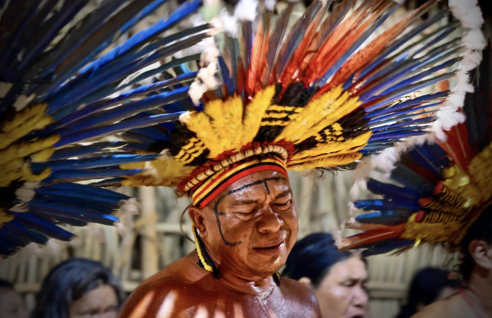
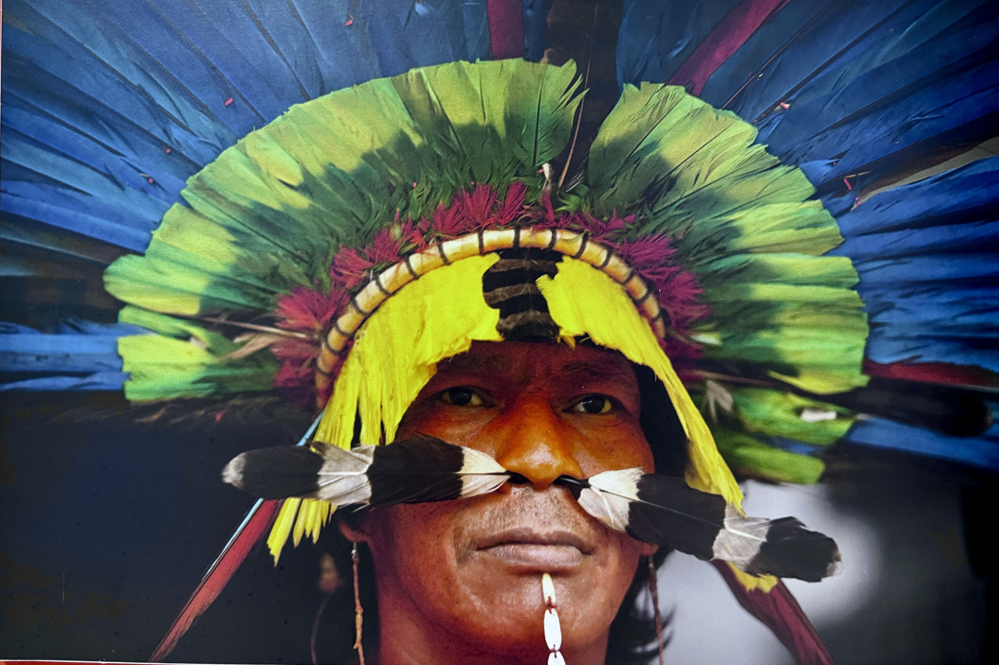
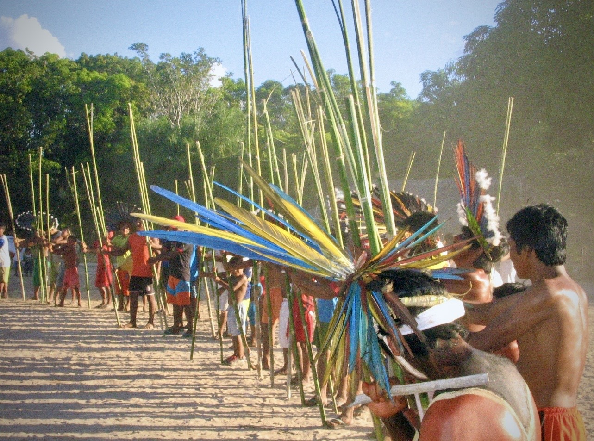

Boe Eno Moto
Mundo Bororo
Dicionário, enciclopédia, fauna e corpus sonoro do povo Bororo.
Explorar →



Dicionário
Enciclopédia
Fauna
Imagens & Sons
Registros visuais e sonoros da cultura Bororo
Sobre o Projeto
Conheça a plataforma
Quem somos
Boe eno moto ("mundo Bororo") é uma plataforma dedicada à preservação, documentação e valorização dos saberes linguísticos e culturais do povo Bororo.
Como citar
ENOMOTO, T. Boe eno moto: Mundo Bororo [plataforma digital]. 2024. Disponível em: https://plataformasindigenas.github.io/boeenomoto/
Parceiros
Este repositório reúne uma variedade de recursos linguísticos e etnográficos, tanto históricos quanto contemporâneos, com o objetivo de apoiar o ensino, a pesquisa e os esforços de revitalização da língua Bororo. A plataforma oferece um conjunto de ferramentas voltadas para o estudo linguístico e antropológico.
A língua é o espírito do povo. Preservar a língua é preservar a alma de uma cultura.— Provérbio Bororo